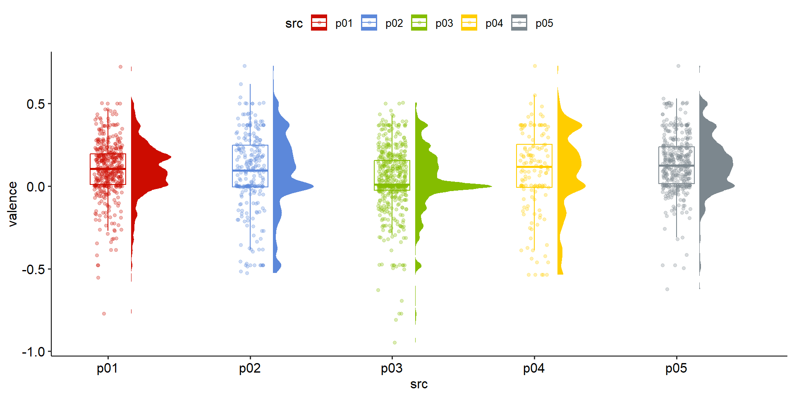

Text as data
Digital behavioral data - Bonus session
14.12.2022
Seminarplan
| Sitzung | Datum | Thema | Referent*Innen |
|---|---|---|---|
| 1 | 26.10.2022 | Kick-Off Session | Christoph Adrian |
| 2 | 02.11.2022 | DBD: Einführung und Überblick | Christoph Adrian |
| 3 | 09.11.2022 | DBD: Datenerhebung | Christoph Adrian |
| 4 | 16.11.2022 | API-Access (I): Twitter | Falk |
| 5 | 23.11.2022 | API-Access (II): YouTube | Denisov |
| 6 | 30.11.2022 | API-Access (II): Reddit | Landauer |
| 7 | 07.12.2022 | Webscraping: TikTok | Brand & Kocher |
| 8 | 14.12.2022 | Text as data | Christoph Adrian |
| WEIHNACHTSPAUSE | |||
| 9 | 11.01.2023 | ESM: m-path | Dörr |
| 10 | 18.01.2023 | Data Donations | Hofmann & Wierzbicki |
| 11 | 25.01.2023 | PUFFER | |
| 12 | 02.02.2023 | Guest Lecture: Linking DBD & Survey data | Johannes Breuer |
| 13 | 08.02.2023 | Semesterabschluss & Evaluation | Christoph Adrian |
Agenda
- A short introduction
- Case Study: Amazon Reviews
- Kursevluation
- Sentiment analysis
- Topic Modeling
A short introduction
im Fokus: Text as data
Nicht neu, aber andere Dimension
Das Phänomen Text as data
Lange Tradition der Text- und Inhaltsanalyse (besonders in der Kommunikationswissenschaft)
Chancen & Herausforderungen durch explosionsartige Vergrößerung des (Text-)Datenaufkommen in den letzten Jahren (Websites, Plattformen & Digitalisierung)

Neue Quellen, Neue Methoden, neue Möglichkeiten
Verschiedene Textgrundlagen als Beispiel

Ein riesiges Feld
Überblick über verschiedene Methoden

Case study: Amazon Reviews
üïµÔ∏è ‚≠ê‚≠ê‚≠ê‚≠ê‚≠ê


Im Fokus: üíä Di√§tpillen
Hintergrund
- Reviews von fünf Diätpillen automatisch über custom function gescraped
- Datensatz mit knapp über 2000 Reviews
- Nächste Schritte:
Datenaufbereitung
Text-Processing
Sentiment-Analyse
Topic Modeling


Quick scraping step-by-step
1️⃣ Custom function für Export der html-Elemente
scrape_amazon <- function(page_num, review_url) {
url_reviews <- paste0(review_url, "&pageNumber=", page_num, "&sortBy=recent")
doc <- read_html(url_reviews)
map_dfr(doc %>% html_elements("[id^='customer_review']"), ~ data.frame(
review_title = .x %>% html_element(".review-title") %>% html_text2(),
review_text = .x %>% html_element(".review-text-content") %>% html_text2(),
review_star = .x %>% html_element(".review-rating") %>% html_text2(),
date = .x %>% html_element(".review-date") %>% html_text2() %>% gsub(".*vom ", "", .),
author = .x %>% html_element(".a-profile-name") %>% html_text2(),
page = page_num
)) %>%
as_tibble %>%
return()
}Quick scraping step-by-step
2️⃣ Definition von Amazon Review URLs
url <- list(
p01 = "https://www.amazon.de/LINEAVI-Eiwei%C3%9F-Shake-Kombination-Molkeneiwei%C3%9F-laktosefrei/product-reviews/B018IB02AU/ref=cm_cr_dp_d_show_all_btm?ie=UTF8&reviewerType=all_reviews",
p02 = "https://www.amazon.de/Detoxkuren%E2%80%A2-Entw%C3%A4sserung-Entschlackung-Stoffwechsel-entschlacken/product-reviews/B072QW5ZN1/ref=cm_cr_dp_d_show_all_btm?ie=UTF8&reviewerType=all_reviews",
p03 = "https://www.amazon.de/Saint-Nutrition%C2%AE-KETO-BURN-Appetitz%C3%BCgler/product-reviews/B08B67V8G5/ref=cm_cr_dp_d_show_all_btm?ie=UTF8&reviewerType=all_reviews",
p04 = "https://www.amazon.de/Yokebe-vegetarisch-Mahlzeitersatz-Gewichtsabnahme-hochwertigen/product-reviews/B08GYZ8LRB/ref=cm_cr_dp_d_show_all_btm?ie=UTF8&reviewerType=all_reviews",
p05 = "https://www.amazon.de/Vihado-Liquid-chlorophyll-drops-alfalfa/product-reviews/B093XNC8QH/ref=cm_cr_arp_d_paging_btm_next_2?ie=UTF8&reviewerType=all_reviews"
)Quick scraping step-by-step
3️⃣ Scrape with for-loops
Quick scraping step-by-step
4️⃣ Endresultat
Rows: 2,142
Columns: 8
$ src <chr> "p01", "p01", "p01", "p01", "p01", "p01", "p01", "p01", "…
$ id <dbl> 1, 2, 3, 4, 5, 6, 7, 8, 9, 10, 11, 12, 13, 14, 15, 16, 17…
$ review_title <chr> "Schmeckt wie ein angenehmer Milchshake", "Nicht zufriede…
$ review_text <chr> "Wie ich damit abgenommen haben kann ich noch nicht sagen…
$ review_star <chr> "4,0 von 5 Sternen", "2,0 von 5 Sternen", "5,0 von 5 Ster…
$ date <chr> "Kundenrezension aus Deutschland üá©üá™ am 26. November 2022"‚Ķ
$ author <chr> "Rayan Wehbi", "Motte", "V.K", "niw", "Murphy", "Julia", …
$ page <int> 1, 1, 1, 1, 1, 1, 1, 1, 1, 1, 2, 2, 2, 2, 2, 2, 2, 2, 2, …Explorative Datenanalyse
Im Fokus: Amazon Reviews
Anzahl der Reviews nach Produkt
Kennenlernen des Datensatzes
src <categorical>
# total N=1736 valid N=1736 mean=2.88 sd=1.46
Value | N | Raw % | Valid % | Cum. %
--------------------------------------
p01 | 438 | 25.23 | 25.23 | 25.23
p02 | 256 | 14.75 | 14.75 | 39.98
p03 | 509 | 29.32 | 29.32 | 69.30
p04 | 143 | 8.24 | 8.24 | 77.53
p05 | 390 | 22.47 | 22.47 | 100.00
<NA> | 0 | 0.00 | <NA> | <NA>Anzahl der Reviews nach Produkt im Zeitverlauf
Kennenlernen des Datensatzes
Bewertungen der Produkte: Absolute Zahlen
Kennenlernen des Datensatzes
Bewertungen der Produkte: Kummulierte Anteile
Kennenlernen des Datensatzes
☕ Kursevaluation
Bitte nehmen Sie über den QR Code oder folgenden Link an der Evaluation teil:
Losung: QNWVC

Text processing
Kurze Erklärung der Grundbegriffe Korpus, Token & DFM
Vom Korpus zum Model
Prozess der Textverarbeitung

Sätze – Token – Lemma – POS
Vorverarbeitungsschritte für Textanalyse
1. Satzerkennung
Was gibt’s in New York zu sehen?
2. Tokenisierung
was; gibt; `s; in; new; york; zu; sehen; ?
3. Lemmatisierung
was; geben; `s; in; new; york; zu; sehen; ?
4. Part-Of-Speech (POS) Tagging
>Was/PWS >gibt/VVFIN >’s/PPER >in/APPR >New/NE >York/NE >zu/PTKZU >sehen/VVINF
Von BOW zu DFM
Bag-of-words (BOW) und Document-Feature-Matrix (DFM)

Sentiment Analyse
üëé & üëç
The good, the bad and the ugly
Grundidee & Ziele und der Sentimentanalyse
Auf Basis von speziellen Wortlisten bzw. Lexika werden bestimmte Begriffe ausgezählt, denen zuvor entweder ein numerischer Wert (Score) oder eine Kategorien (positiv oder negativ) zugeordnet wurden.
Ziel ist die Bestimmung der Polarität (positive/negative Emotion) eines Textes
Aber: Wie gut ist die Klassifizierung?
Grundlagen für die Analyse
Hintergrundinformationen zum Processing & Scoring
Die Verarbeitung und Analyse der Daten erfolgt mit dem
quantedabzw.quanteda.textstatPaket und basiert nur auf dem Korpus der deutschen ReviewsAls Sentiment-Grundlage wird SentiWS genutzt:
Der SentimentWortschatz, oder kurz SentiWS, ist eine öffentlich verfügbare deutschsprachige Ressource für die Sentiment Analyse, Opinion Mining und ähnliche Zwecke. Dabei werden für enthaltene Wörter die positive und negative Polarität im Intervall [-1; 1] angegeben, sowie deren Wortart und (falls anwendbar) Flexionsvarianten. Die aktuelle Version des SentiWS enthält ungefähr 1.650 positive und 1.800 negative Grundformen, so dass, inklusive der verschiedenen Flexionsformen, insgesamt etwa 16.000 positive und 18.000 negative Wortformen enthalten sind. SentiWS enthält nicht nur Adjektive und Adverbien, sondern auch Nomen und Verben die Träger von Sentiment sind
Erste Ergebnisse
Bewertung der verschiedenen Diätpillen
amazon$data$de_senti %>%
ggplot(aes(x = src, y = polarity)) +
ggdist::stat_halfeye(
aes(fill = src),
adjust = .5,
width = .6,
.width = 0,
justification = -.3,
point_colour = NA) +
geom_boxplot(
aes(color = src),
width = .25,
outlier.shape = NA
) +
geom_point(
aes(color = src),
size = 1.3,
alpha = .3,
position = position_jitter(
seed = 1, width = .1
)
) +
coord_cartesian(xlim = c(1.2, NA), clip = "off") +
scale_color_startrek() +
scale_fill_startrek() +
theme_pubr()Erste Ergebnisse

Topic Modeling
Grundidee und beispielhafter Ablauf
Grundidee
Quick Introduction to Topic Modeling
Verfahren des unüberwachten maschinellen Lernens, das sich daher insbesondere zur Exploration und Deskription großer Textmengen eignet
Themen werden strikt auf Basis von Worthäufigkeiten in den einzelnen Dokumenten vermeintlich objektiv berechnet, ganz ohne subjektive Einschätzungen und damit einhergehenden etwaigen Verzerrungen
Annahmen
Quick Introduction to Topic Modeling
Ein Textkorpus besteht aus
DDokumenten undVWörtern bzw. TermsEs wird nun angenommen, dass latente Themen
Kzu unterschiedlichen Anteilen in den DokumentenDvorkommen und alle WörterVmit unterschiedlicher Wahrscheinlichkeit zu denKThemen gehören.Ziel der Verfahren ist die Berechnung zweier Matrizen
D×KundV×K.Die erste Matrix
D×Kenthält für jedes einzelne Dokumentdund jedes einzelne Themakdie Wahrscheinlichkeit, dass das Thema in diesem Dokument vorkommt.Analog enthält
V×Kfür jedes einzelne Wortwund jedes einzelne Themakdie Wahrscheinlichkeit, dass das jeweilige Wort in diesem Thema vorkommt.
Mit Hilfe dieser Matrizen können die Themen dann beschrieben und interpretiert werden.
So können aus
V×Kdie wichtigsten Wörter je Thema (d.h., die Wörter mit der höchsten konditionalen Wahrscheinlichkeit, zu einem bestimmten Thema kk zu gehören) abgelesen werden;mittels
D×Kkönnen Themen Dokumenten und umgekehrt zugeordnet werden, z. B. in dem für jedes Dokument dd das Thema kk mit der höchsten konditionalen Wahrscheinlichkeit identifiziert wird.
Structual Topic Modeling im Fokus
Idee und Hintergrund von STM

Welches K?
Bestimmung der optimalen Themenanzahl
amazon$tpm$model_scores %>%
transmute(
k,
`Lower bound` = lbound,
Residuals = map_dbl(residual, "dispersion"),
`Semantic coherence` = map_dbl(semantic_coherence, mean),
`Held-out likelihood` = map_dbl(eval_heldout, "expected.heldout")) %>%
pivot_longer(-k, names_to = "Metric", values_to = "Value") %>%
ggplot(
aes(k, Value, color = Metric)) +
geom_line(size = 1.5, alpha = 0.7, show.legend = FALSE) +
facet_wrap(~Metric, scales = "free_y") +
labs(x = "K (number of topics)",
y = NULL,
title = "Model diagnostics by number of topics")Welches K?

Kombination aus Kohärenz & Exklusivität
Bestimmung der optimalen Themenanzahl
amazon$tpm$model_scores %>%
select(k, exclusivity, semantic_coherence) %>%
filter(k %in% c(5, 7, 11)) %>%
unnest(cols = c(exclusivity, semantic_coherence)) %>%
mutate(k = as.factor(k)) %>%
ggplot(aes(semantic_coherence, exclusivity, color = k)) +
geom_point(size = 2, alpha = 0.7) +
labs(x = "Semantic coherence",
y = "Exclusivity",
title = "Comparing exclusivity and semantic coherence",
subtitle = "Models with fewer topics have higher semantic coherence for more topics, but lower exclusivity") Kombination aus Kohärenz & Exklusivität
Top Features der Themen
Interpretation des Models
Topic 1 Top Words:
Highest Prob: tropfen, geschmack, chlorophyll, wasser, wirkung, schmeckt, schon
FREX: tropfen, chlorophyll, glas, grün, farbe, flasche, konnten
Lift: alfalfa, dosieren, farbe, frisch, geladen, glas, grüne
Score: tropfen, chlorophyll, farbe, grün, geladen, medien, wirkung
Topic 2 Top Words:
Highest Prob: produkt, super, nehme, seit, mehr, sagen, wirklich
FREX: nehme, gutes, begeistert, seit, wirkt, hilft, überrascht
Lift: begeistert, detox, entgiften, entschlacken, gutes, pfirsich, teste
Score: produkt, seit, nehme, weiteren, super, gutes, hilft
Topic 3 Top Words:
Highest Prob: gut, dass, tag, tagen, ganz, finde, besser
FREX: ganz, finde, möchte, produkte, tagen, anfang, wenig
Lift: anfang, soweit, generell, produkte, komisch, versucht, möchte
Score: gut, generell, finde, dass, ganz, tag, tagen
Topic 4 Top Words:
Highest Prob: schmeckt, geschmack, shake, lineavi, shaker, pulver, lecker
FREX: shake, lineavi, shaker, pulver, lecker, shakes, almased
Lift: anleitung, dosen, ersetzt, aktivkost, almased, classic, diätshake
Score: lineavi, shaker, shake, almased, pulver, shakes, milch
Topic 5 Top Words:
Highest Prob: schon, wochen, leider, kapseln, abgenommen, sport, abnehmen
FREX: kapseln, abgenommen, tabletten, geld, bringt, sport, schlucken
Lift: abgenommen, achten, burn, gebracht, gegenteil, geld, geldverschwendung
Score: kapseln, tabletten, keto, burn, abgenommen, sport, kilo Prevalence der Themen
Interpretation des Models
amazon$stm$preval$tgt %>%
ggplot(aes(topic, gamma, label = terms, fill = topic)) +
geom_col(show.legend = FALSE) +
geom_text(hjust = 1.1, nudge_y = 0.0005, size = 3, color = "white") +
coord_flip() +
scale_y_continuous(expand = c(0, 0), limits = c(0, 0.35), labels = scales::percent) +
theme_bw() +
theme(panel.grid.minor = element_blank(),
panel.grid.major = element_blank()) +
labs(x = NULL, y = expression(gamma)) +
scale_fill_jama()Prevalence der Themen